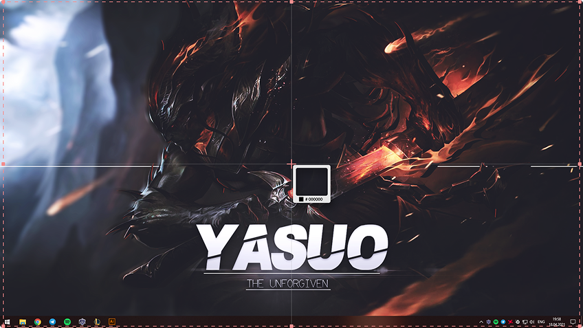
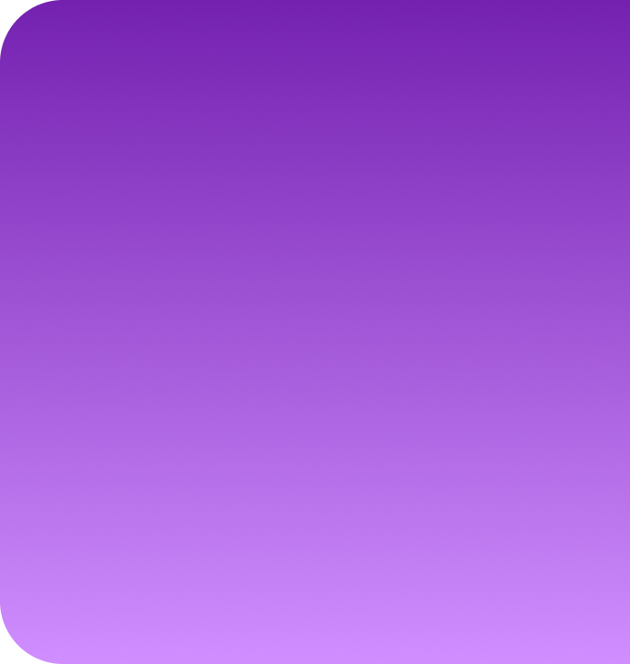
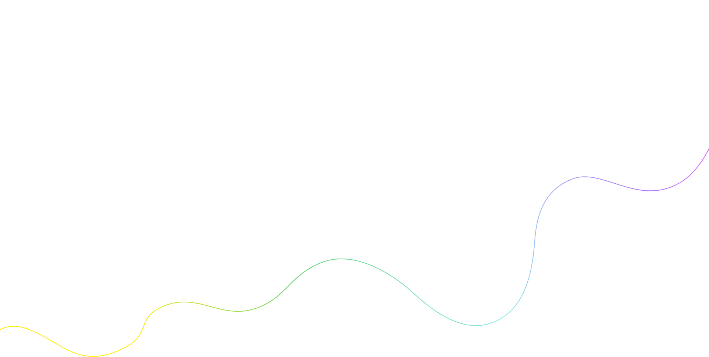
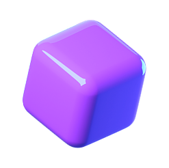
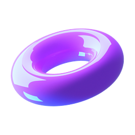
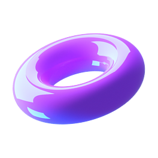

Делайте снимки и записывайте экран в 1 клик
Вместе со Screenshoter можно в один клик сделать снимок или записать происходящее на экране ПК, чтобы поделиться с кем угодно



Бесплатная программа для Windows
Встречайте — скриншоты и запись экрана 2 в 1
Больше не нужно искать две отдельные программы для скриншотов и записи экрана. Screenshoter поможет сделать снимок экрана, записать видео и поделиться им с кем угодно. Можно выделить весь экран, определенную область или активное окно
Моментальная ссылка на файл
Удобный редактор снимков
Бесплатно и без регистрации

.png)

Запись экрана
Недостаточно снимков? Запишите происходящее на экране со своим голосом или звуком системы.
Достаточно нажать две кнопки мыши, выделить необходимую область и начнется запись видео с экрана. Быстро и без сложных настроек


В один клик
Просто нажмите две кнопки мыши или настройте горячую кнопку на любую удобную клавишу
Не нужно запоминать комбинации клавиш на клавиатуре, чтобы сделать скриншот или начать записывать видео с экрана.

Мгновенная ссылка
Мгновенное получение ссылки на снимок или видео. Вы только нажали Enter, а ссылка уже в буфере обмена. Перейдя по ссылке, можно будет посмотреть ваш снимок или записанное видео
 

И редактор снимков
Более 5 инструментов для редактирования. Выделяете область и редактируете.
Если неверно выбрали область — не беда, можно без проблем её передвинуть и/или изменить размер, не удаляя то, что уже нарисовано!
.png)
Выбирайте цвет и рисуйте карандашом
.png)
Используйте стрелку, круг или квадрат для выделения
Оставляйте комментарии
Выбирайте цвет и рисуйте карандашом
Screenshoter - это функции на каждый день

01.
Обмен идеями
Когда нужно что-то наглядно показать коллеге, исполнителю или заказчику — можно сделать снимок экрана и добавить к нему комментарий.
А если ситуация требует более детального объяснения — окей, не проблема. Screenshoter поможет записать видео экрана вместе с вашими голосовыми комментариями
02.
Создание инструкций
Нужно что-то наглядно объяснить? Создавайте удобные, пошаговые инструкции, добавляя комментарии и визуальные отметки в необходимом месте скриншота.
Поделиться снимком или видеозаписью можно с помощью ссылки, которая мгновенно появляется в буфере обмена
03.
Обмен идеями
Если в процессе работы приложения, сайта или сервиса возникла ошибка, её можно моментально зафиксировать.
Отправьте скриншот в техподдержку, где будет видно, в чем именно заключается проблема
Как использовать Screenshoter
Шаг 1.
Скачайте программу
на свой ПК или ноутбук
Шаг 2.
Запустите Screenshoter
программа будет работать в фоновом режиме
Шаг 3.
Наслаждайтесь удобством
и быстродействием
Screenshoter полезен тем, кто работает в интернете
Согласовывайте рабочие вопросы, показывайте интересные вещи и обсуждайте любые темы. Делитесь комментариями с помощью бесплатного инструмента 2 в 1
.png)
Без регистрации: не нужно вводить никаких персональных данных

Бесплатно, без скрытых платежей и комиссий
Неограниченное количество скриншотов и записей
Файлы хранятся в течение 1 года — вы можете удалить их в любое время
FAQ
01.
Платная ли программа?
Нет, Screenshoter абсолютно бесплатный. Вам не нужно платить за скачивание, установку или использование программы — все функции бесплатные